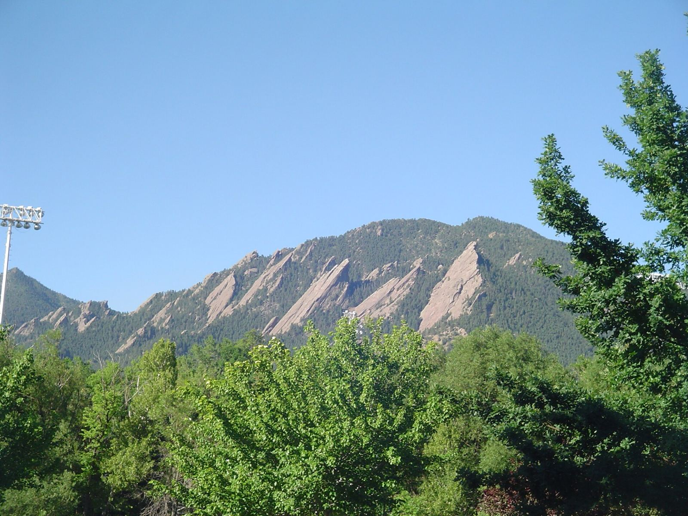
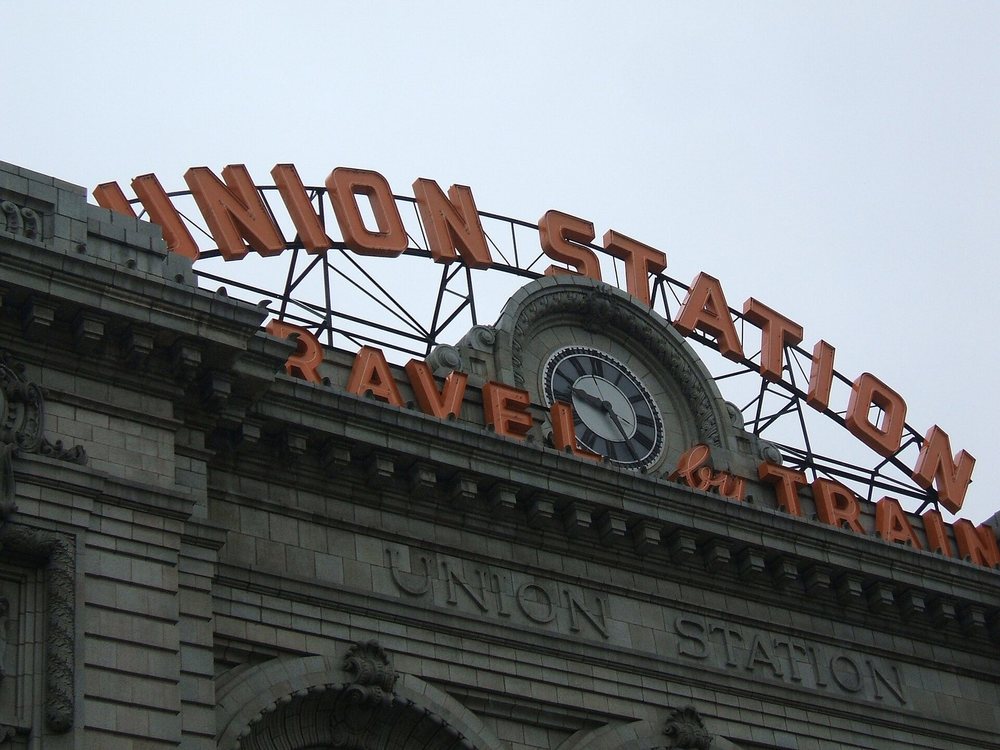
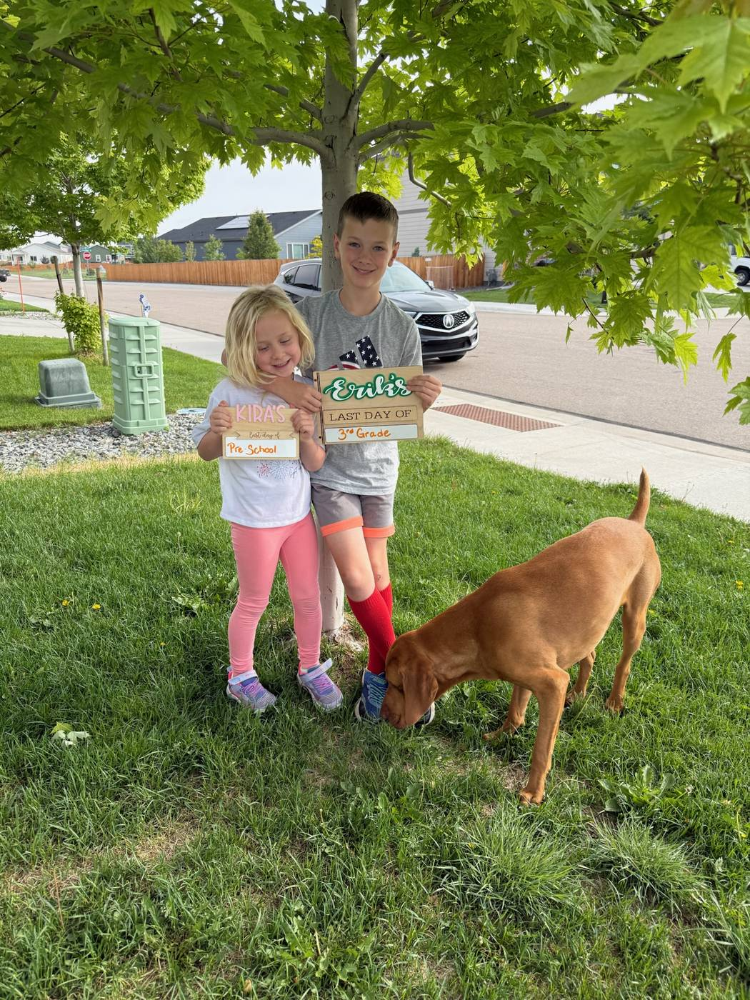
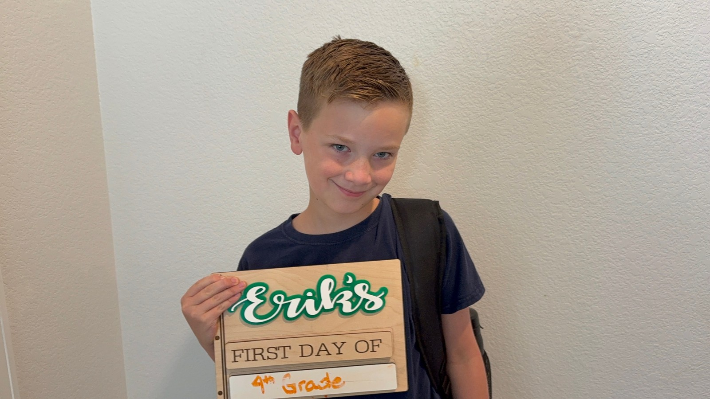
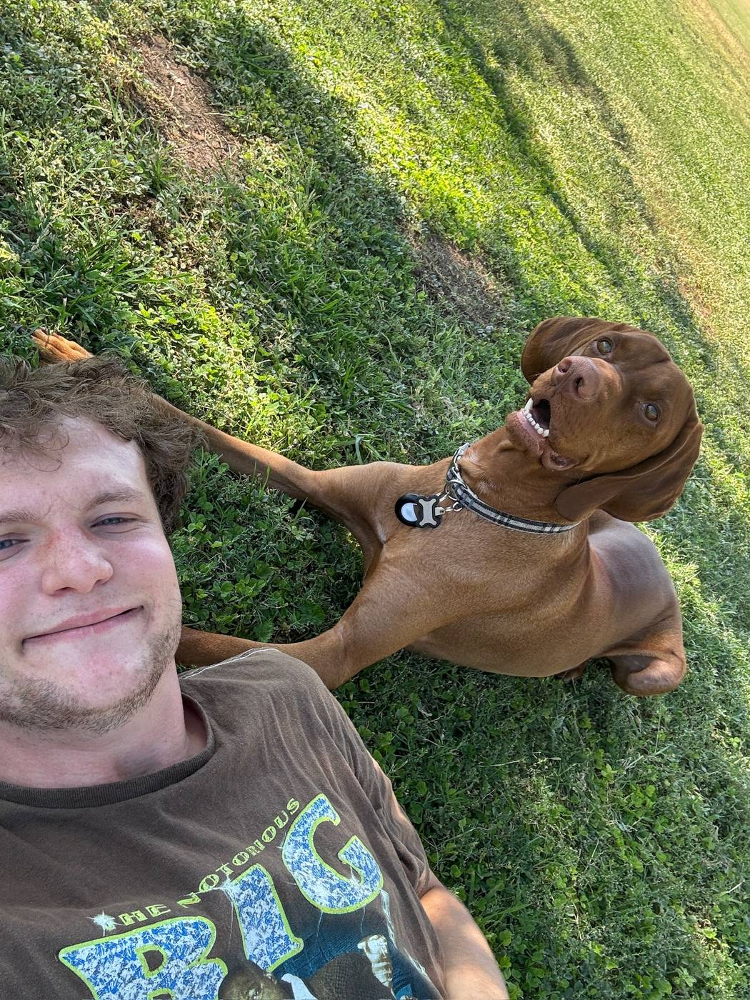

Maximize time with Preston, see family, and get home Saturday.
This is a starting plan with options, not a locked itinerary
6 daysMon Nov 23 – Sat Nov 28
ThanksgivingThursday, November 26
2 flightsSouthwest · confirmation 2GP57I
3 nightsResidence Inn Longmont, Wed–Sat
The idea
Overview
Christoph flies into DEN at noon on Monday. Sandy (Jenn’s mom) picks him up and he keeps her car until Wednesday, when it goes back to her house in Northglenn. The working assumption is that he stays with her in Northglenn Monday night, but that isn’t confirmed. Tuesday morning he gets her to Union Station for the Grand Junction train, then meets Aunt Linda for breakfast at Bread & Butters in Parker at 9:00 AM. After breakfast (ends 10:15 AM), he goes to see Preston in nearby Highlands Ranch. Wednesday he meets John at Gem Industries in Welby at 9:30 AM, then they have breakfast nearby. Lynn is in: he parks Sandy’s car back at Sandy’s in Northglenn around 12:00 PM, Lynn meets him there, and they drive together to pick up Preston and Dexter in Highlands Ranch, arriving at the Longmont Residence Inn by 3:00 PM. Thursday is Thanksgiving at his parents’ in Westminster, with the whole family; time is still TBD. Friday is quality dad-and-son time in Boulder with Preston and Dexter — daytime around town, then drinks and dinner at Rio Grande Mexican Restaurant. The hotel stays the Longmont Residence Inn through Saturday. Saturday, Lynn picks them up at the hotel about 8:15 AM, drops Christoph at DEN about 9:15 for the 11:00 AM flight, then takes Preston and Dexter home to Highlands Ranch. Sandy’s car stays at her house in Northglenn after Wednesday, so Thursday and Friday still need a car.
Times below are Mountain Time unless a flight’s Pacific Time is also noted. Drive times are estimates without traffic and can change. Private addresses are left off this page.
Monday to Saturday
Day by day
Booked items and confirmed driving with Lynn are marked. A few details are still open.

Monday, November 23
Arrive DEN · Sandy picks up
8:30 AM PT
Southwest WN 3875 leaves San Jose (SJC). Seat 17B, Choice fare. Booked
12:00 PM MT
Lands at DEN. Sandy picks Christoph up. He keeps her car until Wednesday, when it goes back to her house in Northglenn. The drive to Northglenn is about 35 minutes without traffic.
Afternoon / evening
Open — a first block with Preston in Highlands Ranch is about 45 minutes from Northglenn. Monday night lodging is assumed to be Sandy’s in Northglenn, still to confirm.

Tuesday, November 24
Sandy to the train · Linda in Parker · Preston
The train
Amtrak’s California Zephyr (train 5) is scheduled to leave Denver Union Station at 8:46 AM MT for Grand Junction, arriving 4:30 PM MT. (The published time is 8:46, not 8:05.) Check it the day before.
Suggested drop
From Northglenn, RTD’s N Line is the natural rail option. Both nearby stations are a short hop: Eastlake/124th is about 4 minutes from Sandy’s, and Northglenn/112th is about 5 minutes. They are the same train, three minutes apart.
7:00 AM
Leave Northglenn. Aim for the 7:13 AM MT N Line at Eastlake/124th, or the same train at 7:16 AM at Northglenn/112th. It is scheduled to arrive at Union Station at 7:42 AM, about an hour before the Zephyr. A tighter backup is the 7:43/7:46 train, arriving 8:12 AM. Do not take the 8:13/8:16 train — it arrives at 8:42 AM, too late.
Or drive her
Driving Sandy all the way to Union Station is about 22 minutes without traffic, or closer to 30–40 minutes in a Tuesday morning rush. Leave by about 7:15–7:20 AM to be there around 8:00. This is simpler if she has bags; the N Line is more predictable in traffic.
9:00 AM
Bread & Butters with Aunt Linda. 18901 Mainstreet, Parker, CO 80134 (Parker and Mainstreet). Open Tuesday 6:30 AM–1:30 PM. Rated 4.4. Calendar invite: 9:00–10:15 AM MT. After the 7:13 AM N Line drop, it’s about 50 minutes without traffic from the Northglenn area (allow 60–70 on a Tuesday morning)—leave around 8:00 to arrive at 9:00, or earlier if you want a cushion. If you drive Sandy to Union Station (there around 8:00), it’s about 35 minutes without traffic (allow 45–55 in rush), so leave promptly to make 9:00. Confirmed
After 10:15 AM
After breakfast with Linda, go see Preston in Highlands Ranch, about 25 minutes from Parker. Confirmed
Tuesday breakfast · 9:00–10:15 AM · confirmed
Bread & Butters
18901 Mainstreet, Parker, CO 80134. Breakfast and brunch. Open Tuesday 6:30 AM–1:30 PM. Rated 4.4.
John at the shop, breakfast nearby, then up to Longmont
9:30 AM
John Nelson at Gem Industries, his shop in Welby, then breakfast nearby. Calendar: 9:30–11:30 AM MT. He lives in Brighton; the meet is at the shop. From Northglenn, Welby is about 20 minutes without traffic. Two breakfast options are below; nothing is booked. Confirmed
12:00 PM
After breakfast (ends 11:30), drive to Northglenn, about 15 minutes, and park Sandy’s car at Sandy’s. Lynn meets him there. Switch into Lynn’s car (Dexter can’t ride in Sandy’s). Lynn is in. The short hop from Welby makes around 12:00 a reasonable meet time. Confirmed
Then
Lynn and Christoph drive together to pick up Preston and Dexter in Highlands Ranch, about 45 minutes from Northglenn. Leave Highlands Ranch by about 1:45 PM to be at the hotel by 3:00.
3:00 PM
Check in at the week’s Longmont destination: Residence Inn by Marriott Boulder Longmont. Highlands Ranch to the hotel is about 70 minutes without traffic (Christoph measured Highlands Ranch to Boulder at 59 minutes). 1-bedroom suite (queen and sofa bed), confirmation 71125352, through Saturday. Booked
Evening
Settle in with Preston and Dexter. Ivan and Tara in Mead are about 25 minutes from the hotel. Sandy’s car stays at her house in Northglenn, so Thursday and Friday still need a car.
Mr. Egg
A breakfast and lunch spot near the shop in Welby. Open Wednesday 6:00 AM–3:00 PM (closed Mondays).
Dexter can’t ride in Sandy’s car. Lynn’s car is the confirmed plan Wednesday and Saturday. (If that ever fell through: an Ivan car swap in Mead, or transit from Highlands Ranch to Boulder — 402L, C Line, walk, FF1, about 2 hours 16 minutes.)

Erik, Kira, and Max

ErikKiraMax
Thursday, November 26
Thanksgiving
Thanksgiving at Richard and Lynn’s
Day
Thanksgiving at Christoph’s parents’ in Westminster, with the whole family: Richard and Lynn, Ivan, Tara, Erik, Kira, and Max, and Preston. Time still TBD. The Longmont hotel to Westminster is about 40 minutes without traffic. Confirmed
Calendar
A recurring “FRD Checks” hold sits at 5:00–6:00 PM MT at the Highlands Ranch post office. That’s a conflict with a family evening in Westminster — a candidate to skip this week.

Preston and Dexter
Friday, November 27
Boulder with Preston and Dexter
Day
Quality dad-and-son time in Boulder: just Christoph, Preston, and Dexter. The Longmont hotel to downtown Boulder is about 20 minutes without traffic. Come back to the Longmont Residence Inn after dinner.
Daytime
Easy, open ideas around town — Pearl Street, a Chautauqua / Flatirons walk, or the Boulder Creek Path. Dexter comes along.
Evening
Drinks and dinner at Rio Grande Mexican Restaurant, 1101 Walnut Street, Boulder, CO 80302, one block off Pearl Street. Official Friday hours are 11:00 AM–10:00 PM. Phone (303) 444-3690. Reserved 6:00 PM MT on Resy for 2 guests, indoor dining. The cancellation policy asks for 24 hours’ notice. Dexter comes along. Reserved 6:00 PM
Pearl Street Mall
Downtown Boulder’s pedestrian mall, one block from Rio Grande. A good wander before drinks and dinner. Dexter comes along.
City of Boulder Open Space trail through Chautauqua Meadow toward the Flatirons. The Longmont hotel to Chautauqua is about 25 minutes without traffic. Dexter comes along.
Lynn picks up at the Longmont Residence Inn. Official checkout is 12:00 PM, but the flight is at 11:00 AM, so this starts early. Confirmed
9:15 AM
Lynn drops Christoph at DEN for the 11:00 AM flight. Longmont to DEN is about 55 minutes without traffic. Confirmed
Then
Lynn takes Preston and Dexter home to Highlands Ranch, about 50 minutes from DEN without traffic.
11:00 AM MT
Southwest WN 556 DEN → SJC, arrives 12:40 PM PT. Seat 18B, Basic fare. Confirmation 2GP57I. Booked
Saturday morning is tight: Longmont → DEN by 9:15, then an 11:00 AM MT departure. Lynn continues to Highlands Ranch with Preston and Dexter.
Front Range
Map
Pins are numbered in rough week order and colored by day. Private homes sit at the town center, not the house. Bread & Butters, Gem Industries, the Longmont hotel, Union Station, and DEN are the public places.
Mon Tue Wed Thu Fri Sat optional drive (Union Station → Parker)
1DEN airport · Mon, Sat
2Northglenn (Sandy) · town center · Mon–Tue, Wed park her car
3Union Station · Tue
4Parker · Bread & Butters · Tue 9:00 AM
5Welby · Gem Industries · Wed 9:30 AM
6Westminster (parents) · town center · Thu Thanksgiving
7Highlands Ranch (Preston) · town center · Tue, Wed, Sat
8Longmont Residence Inn · Wed–Sat
9Boulder · Chautauqua · Fri daytime
10Rio Grande · 1101 Walnut St · Fri 6:00 PM reserved
Who this week is for
People
Preston
The priority. He lives in Highlands Ranch. Build the open blocks around him, especially Monday evening if the arrival allows, Tuesday afternoon after Parker, Friday, and the Longmont stay.
Dexter
Preston’s service dog. He’s going to Longmont with Preston Wednesday through Saturday. He can’t ride in Sandy’s car. Lynn’s car is the confirmed plan Wednesday and Saturday.
Sandy
Jenn’s mom, in Northglenn. She picks Christoph up at DEN on Monday and leaves her car with him. Tuesday morning she takes the California Zephyr from Union Station to Grand Junction. On Wednesday after breakfast with John, Christoph parks her car back at her house in Northglenn (not at Lynn’s).
Aunt Linda
In Parker, near Highlands Ranch. Tuesday breakfast at Bread & Butters, 18901 Mainstreet, 9:00–10:15 AM MT (on the calendar).
John Nelson
Lives in Brighton. Wednesday: meet at his shop, Gem Industries, in Welby at 9:30 AM, then breakfast nearby (calendar 9:30–11:30 AM), then park Sandy’s car at her house in Northglenn around 12:00 PM, where Lynn meets him.
Richard and Lynn
Christoph’s dad and mom, in Westminster. Thanksgiving is at their place, with the whole family; time still TBD. Lynn is in for the confirmed drives: Wednesday, she meets Christoph at Sandy’s in Northglenn around 12:00 PM (he parks Sandy’s car there), and they ride together to pick up Preston and Dexter, then Longmont by 3:00 PM; Saturday, she picks up at the hotel about 8:15 AM, drops Christoph at DEN about 9:15, then takes Preston and Dexter home. Sandy’s car stays at Sandy’s in Northglenn after Wednesday.
Erik, Kira, and Max
ErikKiraMax
Ivan and Tara
Ivan is Christoph’s brother; Tara is his wife. They live in Mead, next to Longmont — about 25 minutes from the Longmont hotel. Thanksgiving is at Richard and Lynn’s in Westminster.
Erik
Ivan and Tara’s son, Christoph’s nephew. Thanksgiving with the family at Richard and Lynn’s in Westminster.
Kira
Ivan and Tara’s daughter, Christoph’s niece. Thanksgiving with the family at Richard and Lynn’s in Westminster.
Max
Ivan and Tara’s Vizsla. Thanksgiving with the family at Richard and Lynn’s in Westminster.
Southwest · confirmation 2GP57I
Flights
Both flights are booked for Christoph only, under confirmation 2GP57I.
Mon Nov 23 · WN 3875
SJC 8:30 AM PT → DEN 12:00 PM MT · seat 17B · Choice
Sat Nov 28 · WN 556
DEN 11:00 AM MT → SJC 12:40 PM PT · seat 18B · Basic
Check in starts 24 hours before each departure. The Saturday flight is Basic fare; seat 18B is already selected.
Cars, trains, hotel, drives
Logistics
Confirmed · Wednesday and Saturday
Drive with Lynn
Wednesday: after breakfast with John, park Sandy’s car back at Sandy’s in Northglenn around 12:00 PM. Lynn meets him there, they ride together, pick up Preston and Dexter in Highlands Ranch, and reach the Longmont hotel by 3:00 PM. Saturday: Lynn picks up at the Residence Inn about 8:15 AM, drops Christoph at DEN about 9:15, then takes Preston and Dexter home to Highlands Ranch. Dexter can’t ride in Sandy’s car, which is why these legs use Lynn’s. Sandy’s car stays at her house in Northglenn after Wednesday, so Thursday and Friday still need a car.
If the Lynn plan ever fell through: an Ivan car swap in Mead, or transit from Highlands Ranch to Boulder (402L, C Line, walk, FF1; about 2 hours 16 minutes).
Hotel
The week’s Longmont destination is the Residence Inn by Marriott Boulder Longmont. Check-in Wednesday, November 25 at 3:00 PM MT; checkout Saturday, November 28 at 12:00 PM MT. Confirmation 71125352. 1-bedroom, 2-room suite with a queen and a sofa bed. Total for the stay $490.78, prepaid and non-refundable.
Saturday’s official checkout is noon, but Lynn picks up at the hotel about 8:15 AM so Christoph can be at DEN about 9:15 for the 11:00 AM flight. Monday night is assumed to be Sandy’s in Northglenn; Tuesday night is still open.
Sandy’s train
The westbound California Zephyr (Amtrak 5) is scheduled to leave Denver Union Station at 8:46 AM MT on Tuesday and arrive in Grand Junction at 4:30 PM MT. Suggested rail drop: the 7:13 AM N Line at Eastlake/124th, or the same train at 7:16 AM at Northglenn/112th, arriving Union Station 7:42 AM. Leave Northglenn around 7:00 AM. Or drive her to Union Station, leaving about 7:15–7:20 AM. Confirm both the Amtrak and N Line times the day before.
These are uncongested driving estimates and can change with traffic. The Highlands Ranch → Longmont leg is a bit longer than Christoph’s 59-minute Highlands Ranch → Boulder measurement, as you’d expect.
To confirm
Open questions
Who drives Thursday and Friday? Sandy’s car goes back to her house in Northglenn on Wednesday, and Dexter can’t ride in it anyway. Thursday is Thanksgiving in Westminster, and Friday is Boulder (Rio Grande for drinks and dinner) from the Longmont hotel — whose car?
Where does Christoph sleep Monday and Tuesday nights? Monday at Sandy’s in Northglenn is the working assumption, not a confirmation. Tuesday night is still open.
What time is Thanksgiving at Richard and Lynn’s in Westminster? And should the 5:00 PM MT FRD Checks hold at the Highlands Ranch post office be skipped this week?